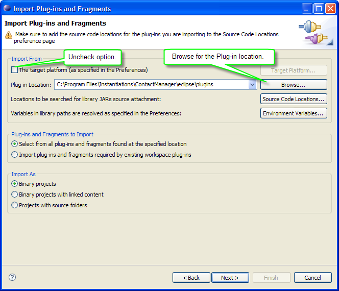

WindowTester Pro tests can be generated against deployed applications. To do so you must first
import your application into your Eclipse development environment and then record your tests as usual.
Follow
these steps to import a RCP application into your Eclipse development
environment. This example (created using Eclipse 3.3) focuses on the Contact Manager RCP application.
If you want to use our example, download and install the Contact Manager RCP application
Download the ContactManager RCP Example example that's appropriate for your OS and version of Eclipse you are using.
Install the example by unzipping the downloaded file.
Import the application to be tested
Launch Eclipse and open the import wizard by selecting File > Import from the main menu.
Select Plug-in Development > Plug-ins and Fragments and then click "Next".
Locate the "Import From" Group and uncheck "The target platform".
Click "Browse..." and locate the plugins directory where you un-zipped the Contact Manager example application.
Click "Next".

Click "Add All -->" to import all of the application's plugins, then click "Finish".
You should now see all of the application's plugins in the Package Explorer within the Java perspective.
You can now generate your tests by following the same record and playback steps 2, 3 and 4 described in Testing a RCP application tutorial.